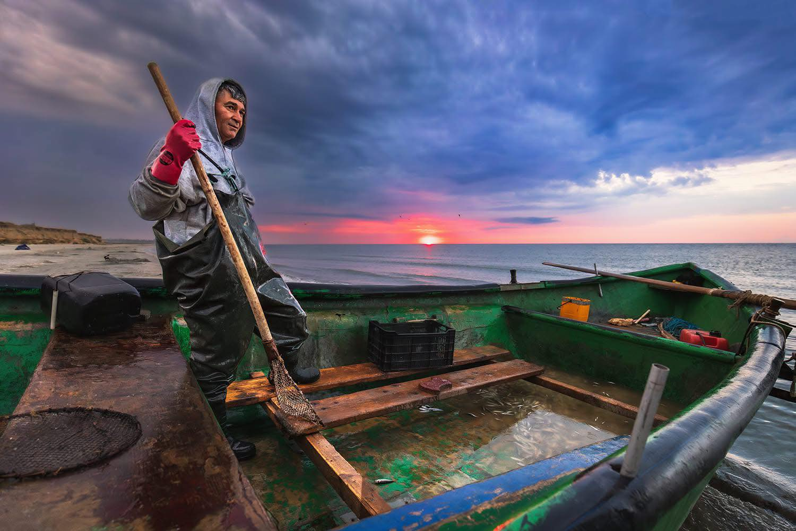
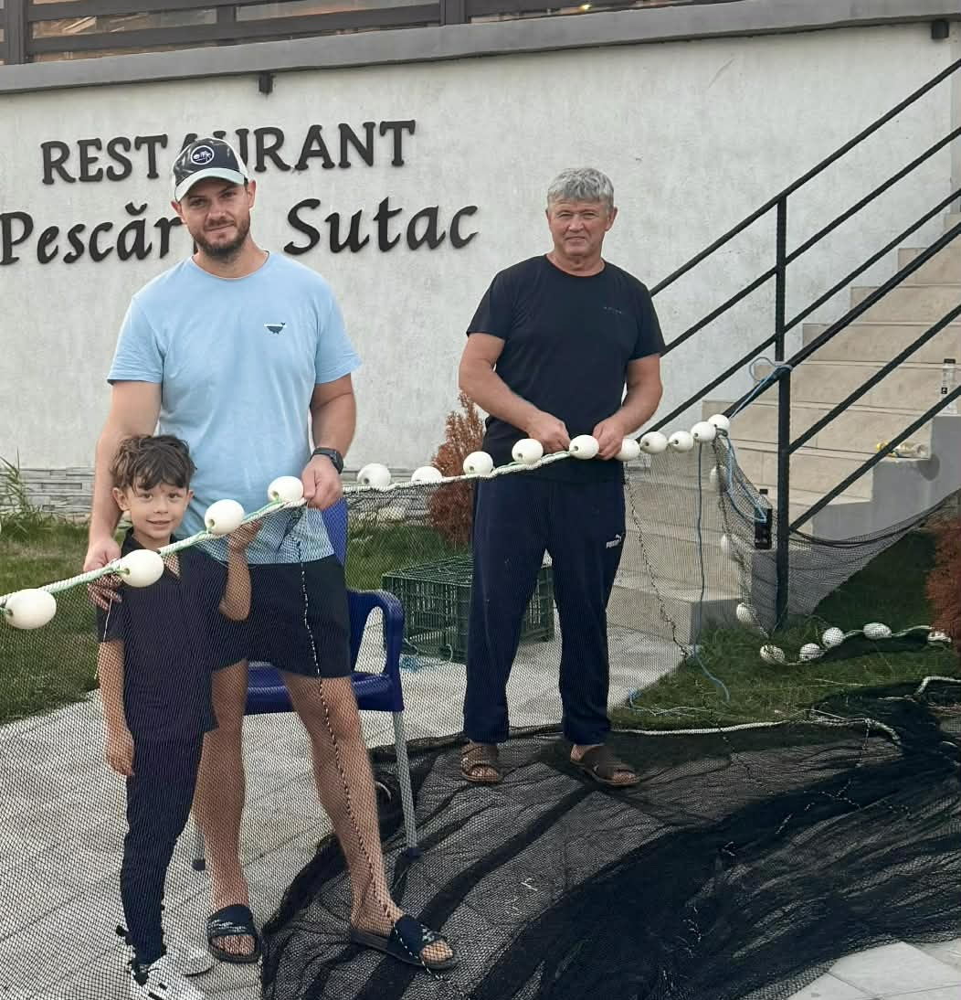

Nu este vorba doar despre mâncare, ci despre ritual:
„La SUTAC, nu primești doar o porție de pește. Primești o bucată din istoria noastră, condimentată cu dragostea a trei generații care au ales să rămână acasă, lângă mare.”